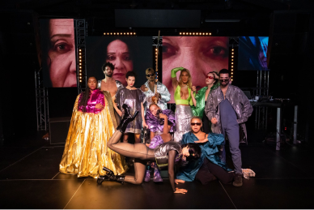

WHAT'S ON

Thu 12 Oct 2023
DESIRE MAREA
(South Africa)

Thu 12 Oct 2023
Pumpitopera transatlantica
(Brazil)
“Transform has changed the way audiences experience Leeds”
THE GUARDIAN
WHAT'S NEW

One month to go — With one month to go until Transform 23, we’re today announcing a series of new commissions, DJ sets and immersive encounters to deepen your experience of the festival.

If walls could talk — Opening the festival alongside Ásrún Magnúsdóttir’s SECRETS, Transform’s Young Curators present IF WALLS COULD TALK.
OPPORTUNITIES
- Sottobosco: workshop call out
- Volunteer call out
- Join the distorded rap choir